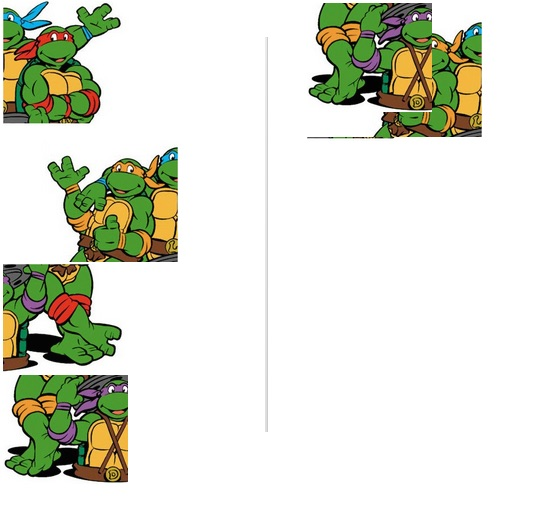

Relative versus Absolute versus Fixed Positioning: Who Cares? (You Should)
August 10, 2015
CSS offers us multiple ways to position HTML elements on a page. When making a webpage, one can use static, absolute, relative, or fixed positioning. Which one is better for a given situation?
Consider a brief overview of each method.
- Static positioning lays out elements as they would be laid out by default: as blocks flowing from top to bottom. By default, nothing is laid out beside a static block. This is “layout by default”, from top to bottom.
- Relative positioning also lays out elements from top to bottom. One is able to re-position elements in relation to where they would normally be. If an element would normally be at second street and sixth avenue, one can move the element one block east and one block north to first street and seventh avenue.
- Absolute positioning allows one to position an element in relation to its parent element. If there is no “parent” present, the element will be laid out in relation to the entire HTML document itself. Fixed positioning follows a similar positioning method, but fixed elements remain in the same position on the screen as a user scrolls through a document.
Which method is better for a given situation? Consider the following example. The images on the left represent the default layout for static and relative positioning. Those on the right represent fixed and absolute positioning.
What does it take for a user to position the pictures together, as pictured below?
The CSS for positioning one of the pictures using relative positioning is:
#div-3 {
position: relative;
bottom: 419px;
left: 520px;
}
And the CSS for absolute and fixed is:
#div-3 {
position: absolute (or fixed);
left: 522px;
top: 405px;
}
They look similar, and the differences seem trivial, but they are not. With absolute and fixed, one can position each picture, in this case, relative to the top-left coordinates of the screen. It is very easy and straightforward to arrange the pictures to fit together. In contrast, for relative positioning, one must position each picture relative to where it would otherwise appear. It is a tedious exercise that lends itself to checking and re-checking in a web browser. In short, for arranging multiple objects in precise locations, some methods are better for others, namely fixed and absolute.
On the other hand, one who wants to reposition one element up, down, or side-to-side slightly will likely turn to relative positioning.
While there is no superior method for all cases, some are better than others in a given situation.